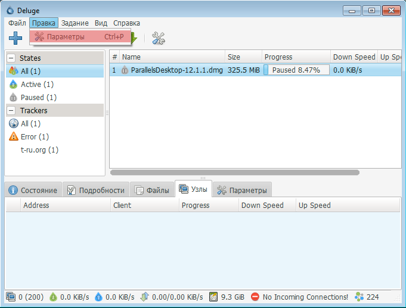
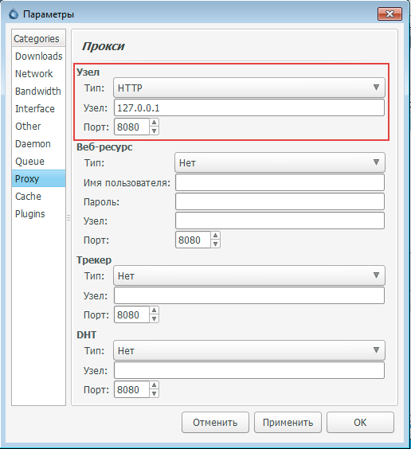
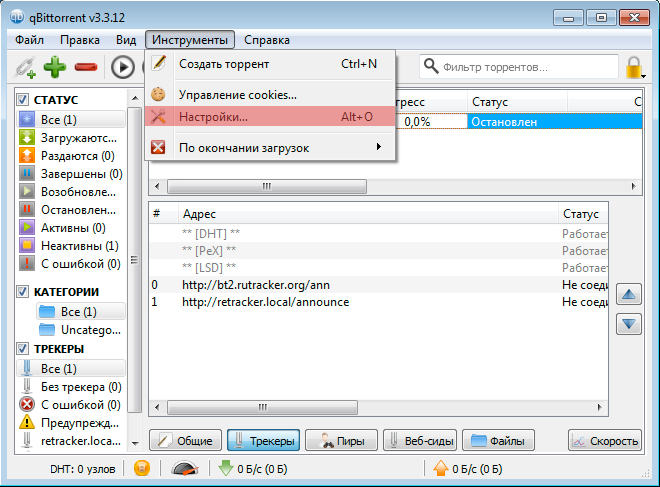
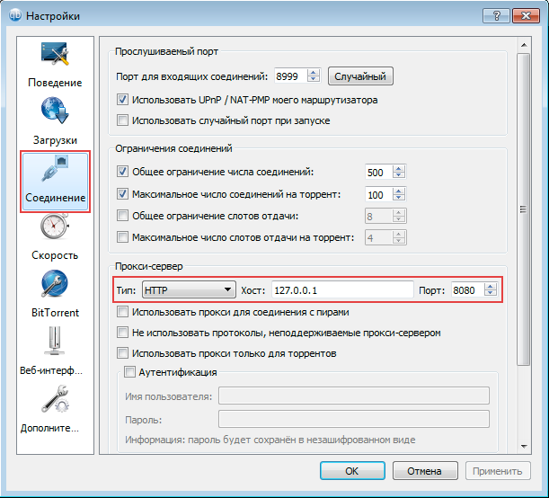
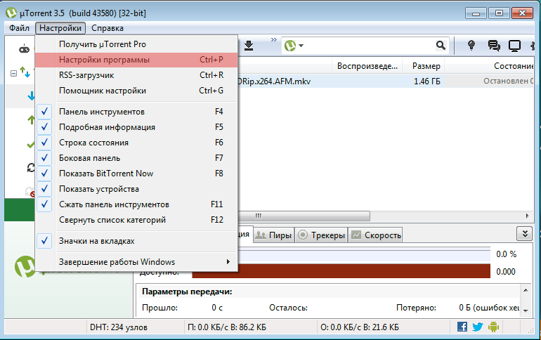
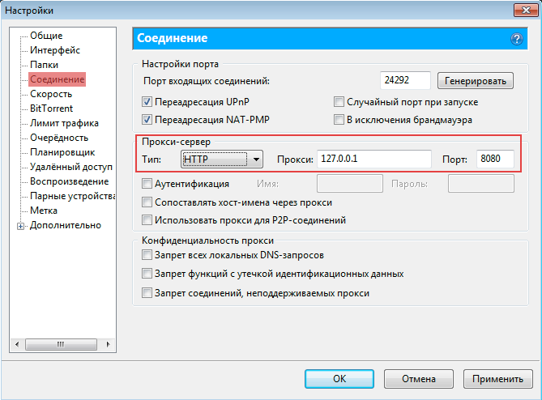
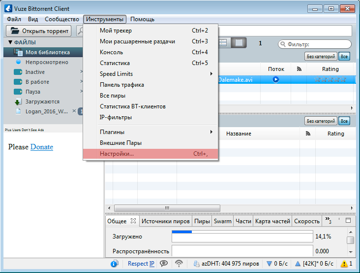
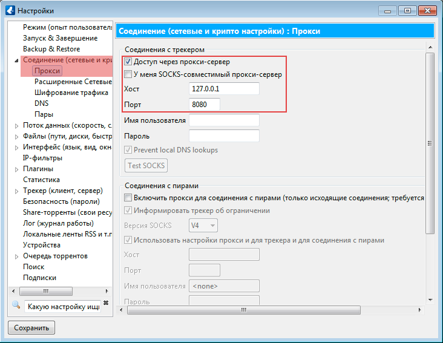

В начало
Нужна помощь?
Выберите ваш торрент клиент
Настройка Deluge
1. Откройте Deluge и перейдите в пункт: Правка -> Параметры
2. Откройте вкладку «Proxy», установите значения как на скриншоте и нажмите «ОК»
Настройка qBittorrent
1. Откройте qBittorrent и перейдите в пункт: Инструменты -> Настройки…
2. Откройте вкладку «Соединение», установите значения как на скриншоте и нажмите «ОК»
Настройка µTorrent
1. Откройте uTorrent и перейдите в пункт: Настройки -> Настройки программы
2. Откройте вкладку «Соединение», установите значения как на скриншоте и нажмите «ОК»
Настройка µTorrent
1. Откройте Vuze и перейдите в пункт: Инструменты -> Настройки...
2. Откройте вкладку «Режим» и выберите пункт «Профессионал» как на скриншоте.

3. Откройте вкладку Соединение -> Прокси, установите значения, как на скриншоте, нажмите «Сохранить» и перезагрузите Vuze
